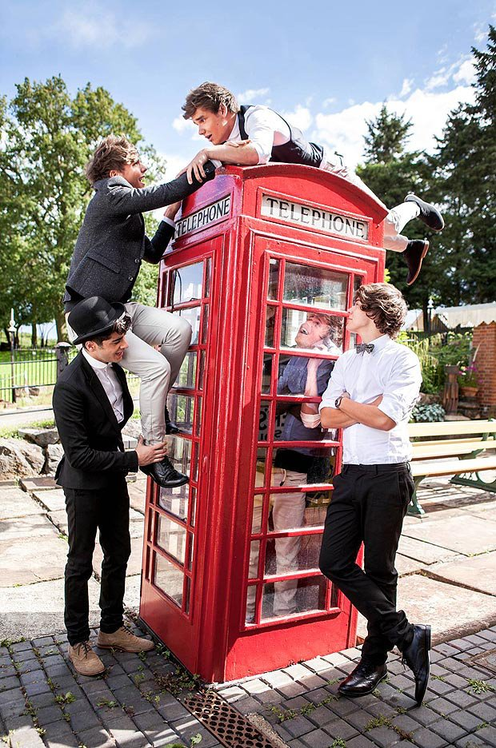

One Direction

One Direction is a british-irish Boyband. One Direction has 5 members: Niall James Horan(13.September 1993), Louis William Tomlinson(24.Dezember 1991),
Liam James Payne(29.August 1992), Zayn Jawaad Malik (12. Januar 1992) and Harry Edward Styles (01. Februar 1994).
One Direction was founded while the British Casting-show The X-Factor. Each of the five members appeared at the beginning of the show as a single candidate, but after they kicked out in the boot-camp, they formed into a group on the advice of the gast-jurymember Nicole Scherzinger and assign to the group-category.
Although One Direction not won the casting-show, and only have become the third placed, they signed a record deal with Sony Musics Entertainment.
Today, One Direction’s one of the most successful Band on the world. They had, among other things, concerts in the famous Madison Square Garden in New York and at the closing celebration of the Olympic Games 2012 in London. They’re first Tour was completely sold out in only 12 Minutes.
One Direction was founded while the British Casting-show The X-Factor. Each of the five members appeared at the beginning of the show as a single candidate, but after they kicked out in the boot-camp, they formed into a group on the advice of the gast-jurymember Nicole Scherzinger and assign to the group-category.
Although One Direction not won the casting-show, and only have become the third placed, they signed a record deal with Sony Musics Entertainment.
Today, One Direction’s one of the most successful Band on the world. They had, among other things, concerts in the famous Madison Square Garden in New York and at the closing celebration of the Olympic Games 2012 in London. They’re first Tour was completely sold out in only 12 Minutes.
| Name | One Direction |
| Members | Niall James Horan Louis William Tomlinson Liam James Payne Zayn Jawaad Malik Harry Edward Styles |
| Founding | 23.July 2010 |
| Nationality | UK |
| Gernre | Pop |
| Succsessful Singe | What makes you beautiful |
| Current Album | Take me home |
| Label | Sony Musics Entertainment |